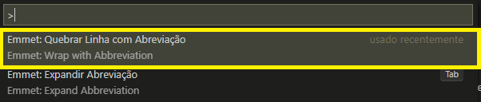

Site Olá mundo
Construção de sites utilizando HTML5 - CSS3 - JavaScript - Visual Studio Code - GitHub


Estas imagens acima são links da internet, não foram carregadas na pasta de imagens deste site, exeto a imagem do logo CSS3
Bibliografia indicada
Referências - on-line
Mozilla Developer Network MDM

W3C Standards Referências Oficiais Word Wide Web Consortion

WHATWG Living Standards
W3Schools
Referências - Livros
HTML5 Mark Pilgrim - O'Reilly
CSS Eric Meyer - O'Reilly
Flexbox in CSS Estelle Weyl - O'Reilly
Grid Layout in CSS - Eric Meyer - O'Reilly
HTML5 e CSS3 Elizabeth Castro e Bruce Hyslop - Alta Books
HTML5 E CSS3 Jon Duckett - Alta Books
HTML E CSS Elisabeth e Eric Freeman - Alta Books
Crie seu proprio site Nate Cooper e Kim Gee - Novatec
Livros do autor Muricio Samy e Silva - Novatec -
HTML5; CSS3; Fundamentos de HTML5 e CSS3; CSS e Grid
Layout
Simbolos e Emoji's em seu site
Simbolos
Exemplo "Entre <p>"
Vamos adicionar alguns símbolos especiais
® © ™ £ € ¥ ¢
δ Δ ↑
✽✾✿❀❁❂❃❇❈
✽✽✾✾✿✿❀❀❁❁❂❂❃❃❇❇❈❈
Podemos adicionar o Simbolos ou o código, as duas formas funcionam.
Emoji
Podemos encontrar no site emojipedia.org
🖖 ou inserir o simbolo direto também funciona 🥰
Mais populares
🥺 Pleading Face ✨ Sparkles 😂 Face with Tears of Joy 🔥 Fire 😊 Smiling Face with Smiling Eyes 👍 Thumbs Up 🎄 Christmas Tree 🥰 Smiling Face with Hearts 😭 Loudly Crying Face 😱 Face Screaming in Fear 😎 Smiling Face with Sunglasses 🤓 Nerd FaceInserção de vídeos originalmente no youtube
Aula 14 - Principais formatações
Negrito ou Destaque
Nesta frase temos a palavra "bold" usando a tag 'b', observação neste caso não possuí a semantica
Nesta frase, tenho um termo em destaque usando a tag strong, observação neste caso possui semântica de destaque
Itálico ou ênfase
Nesta frase temos um termo em ênfase itálico usando a tag I (tag não semântica)
Nesta frase temos um termo em ênfase itálico usando tag EM (tag semântica)
Atalhos usados no VScode
CTRL + SHIFT + P Abrirá uma caixa de texto
Você irá selecionar o texto e inserir a tag que ele envolverá com a abertura e fechamento sem precisar ajusta-lá <i> <\i>
Identação automática shift + alt + F